Although the Semantic Web in principle provides access to a
vast Web of interlinked data, the full potential currently remains mostly
unexploited. One of the main reasons is the fact that the architecture of
the current Web of Data relies on a set of servers providing access to the
data. These servers represent bottlenecks and single points of failure that
result in instability and unavailability of data at certain points in time. In
this paper, we therefore propose a decentralized architecture (Piqnic) for
sharing and querying semantic data. By combining both client and server
functionality at each participating node and introducing replication,
Piqnic avoids bottlenecks and keeps datasets available and queryable
although the original source might (temporarily) not be available. Our
experimental results using a standard benchmark of real datasets show
that Piqnic can serve as an architecture for sharing and querying
semantic data, even in the presence of node failures.
EXPERIMENTS
We ran our experiments on a server with 4xAMD Opteron 6376, 16 core
processors at 2.3GHz, 768KB L1 cache, 16MB L2 cache and 16MB L3 cache
each (64 cores in total), and 516GB RAM. We use 200 clients on the same server.
We have the following metrics:
Execution Time (ET): Execution time of a query in seconds.
Completeness (COM): Number of actual retrieved results divided by number of expected results.
Number of Messages (NM): Number of messages exchanged between nodes.
Number of Transferred Bytes (NTB): Number of transferred bytes between nodes.
We use LargeRDFBench for data and queries for tests. We use groups CD, LS, C, L, and CH.
All queries that completed within the timeout had 100% completeness. Some that timed out were in the process of answering, and had returned some of the answers.
Execution Time (ET) in Seconds for groups CD and LS (log scale)
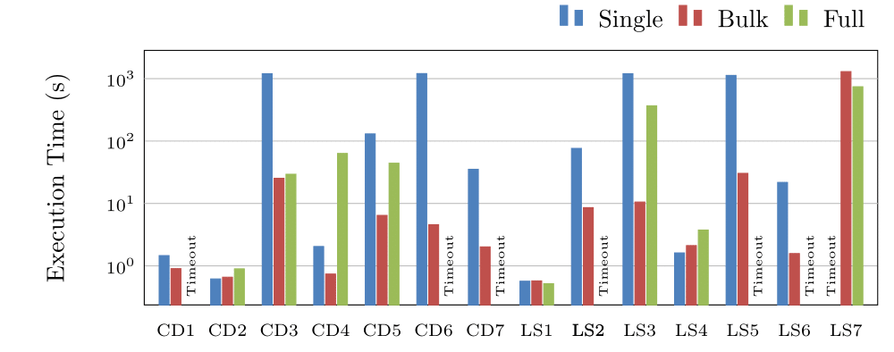
Execution Time (ET) in Seconds for group C (log scale) - Full has been left out, since it timed out for all cases
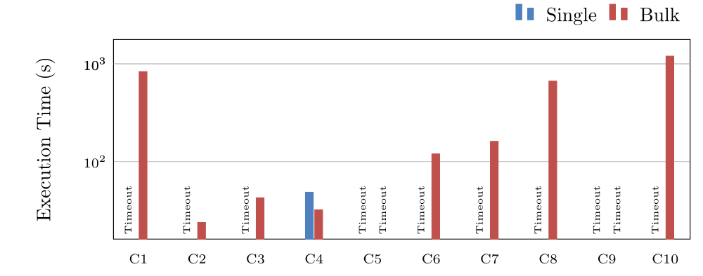
Execution Time (ET) in Seconds for groups L and CH (log scale) - Full has been left out, since it timed out for all cases
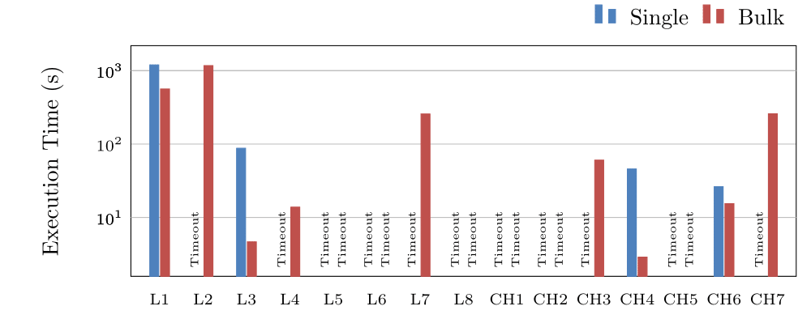
Number of Messages for groups CD and LS (log scale) - Not shown for C, L and CH, since Bulk was the only approach that could answer most queries
Number of Transferred Bytes for groups CD and LS (log scale) - Not shown for C, L and CH, since Bulk was the only approach that could answer most queries
Completeness in Percentage for groups CD and LS, given no recovery time
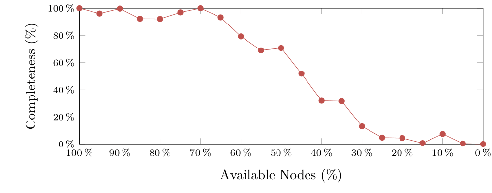
Completeness in Percentage for groups CD and LS, given recovery time
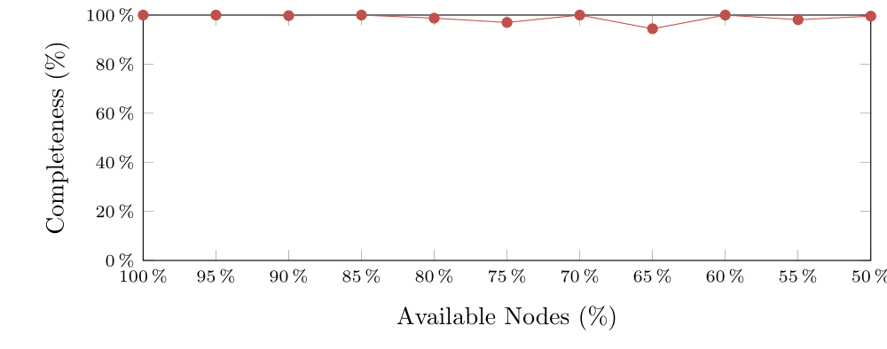
Execution Time (ET) in Seconds for groups CD and LS (log scale)
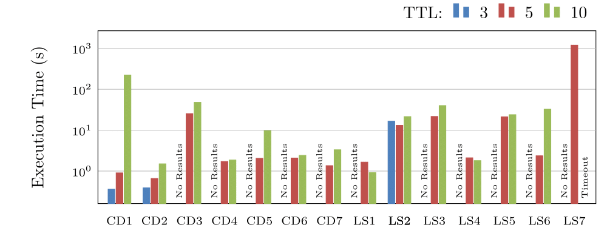
Execution Time (ET) in Seconds for group C (log scale)
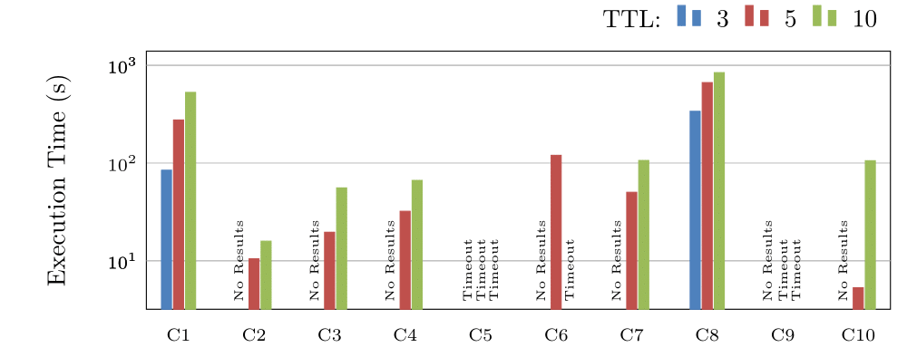
Execution Time (ET) in Seconds for groups L and CH (log scale)
Completeness in Percentage for groups CD and LS
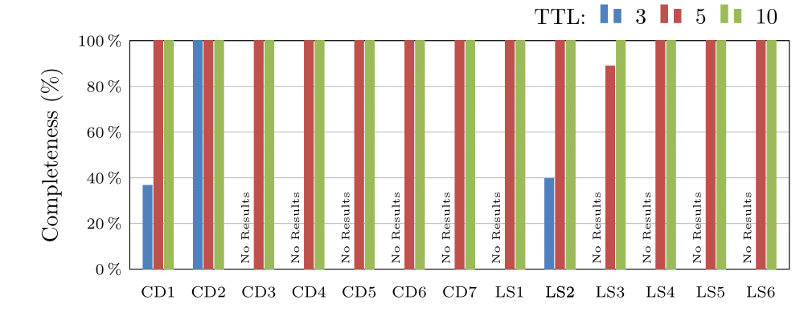
Completeness in Percentage for group C
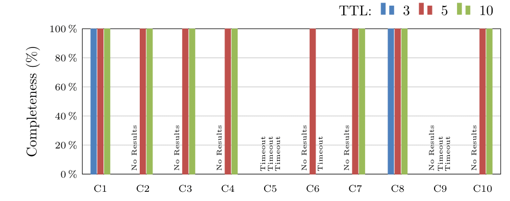
We only show NM and NTB for CD and LS, since they were the groups answered successfully by most TTL values.
Number of Messages for groups CD and LS (log scale)
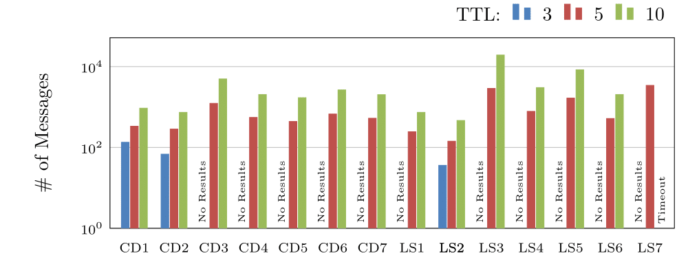
Number of Transferred Bytes for groups CD and LS (log scale)
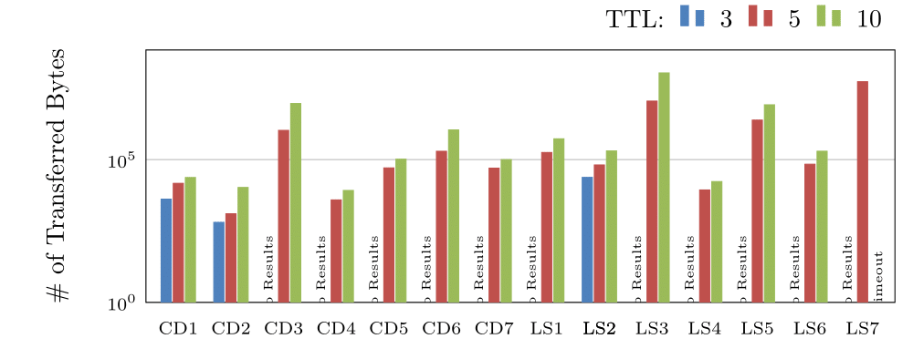
We tested with 0% replication (each fragment is only located on 1 node), 5% and 10%
Execution Time (ET) in Seconds for groups CD and LS (log scale)
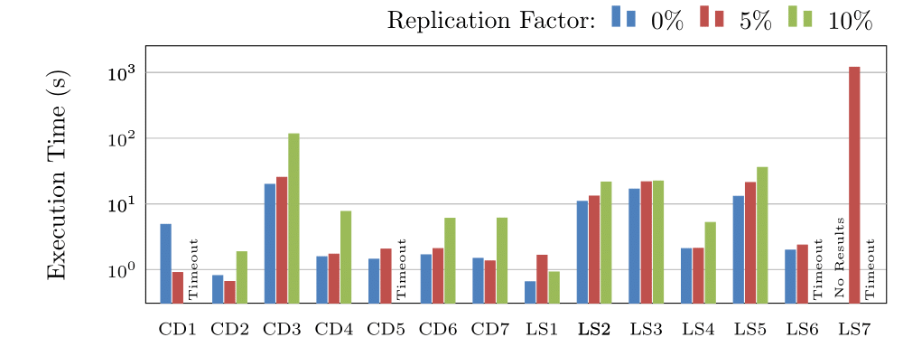
Execution Time (ET) in Seconds for group C (log scale)
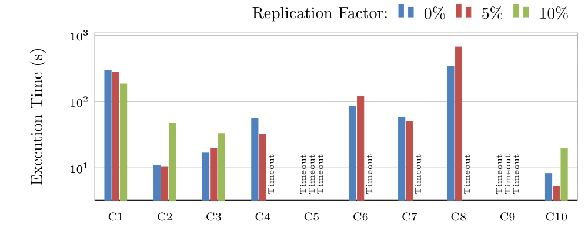
Execution Time (ET) in Seconds for groups L and CH (log scale)
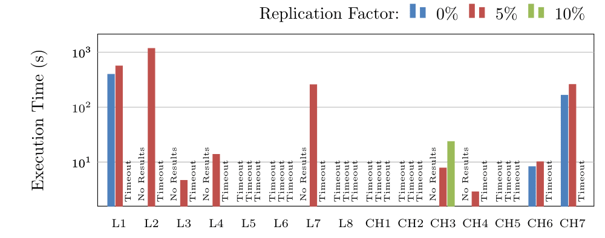
Completeness in Percentage for groups CD and LS
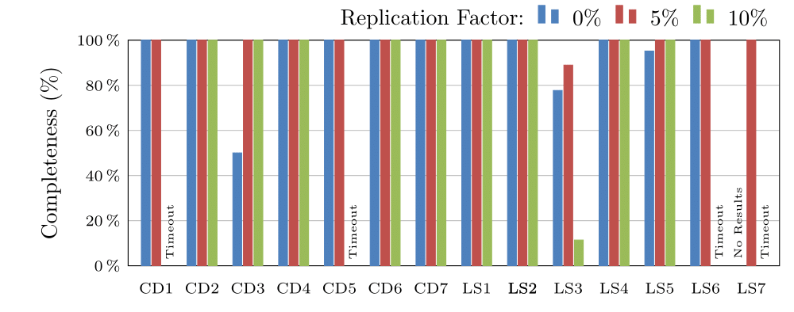
Completeness in Percentage for group C
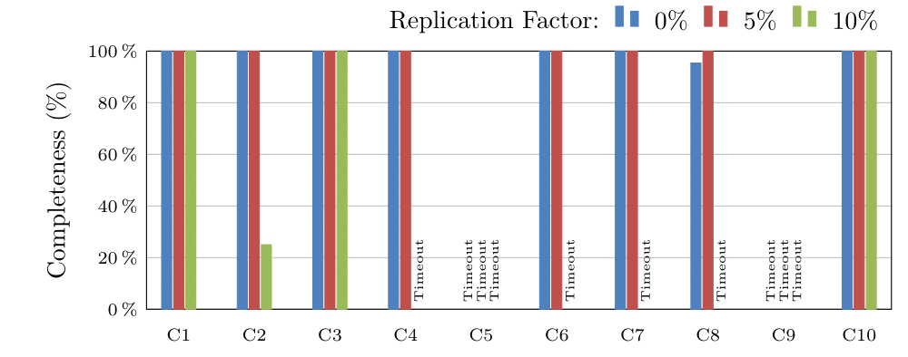
NM and NTB are the same with the exception of small fluctuations due to the specific neighbourhoods of the tested nodes. This is due to the network structure being the same (same amount of nodes contacted).
We tested with 2, 5 and 10 neighbors. We also tested with 0 and 1 neighbors, however none of the queries returned any results.
Execution Time (ET) in Seconds for groups CD and LS (log scale)
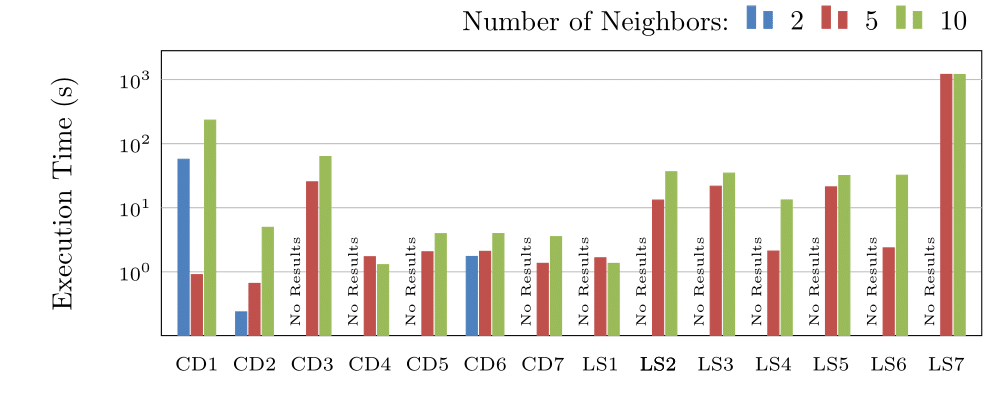
Execution Time (ET) in Seconds for group C (log scale)
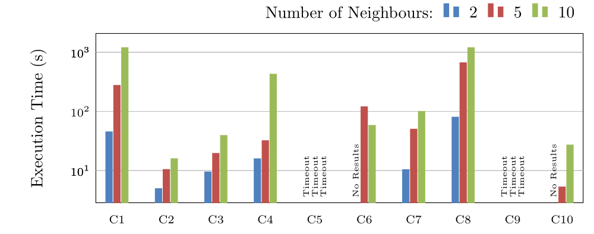
Execution Time (ET) in Seconds for groups L and CH (log scale)
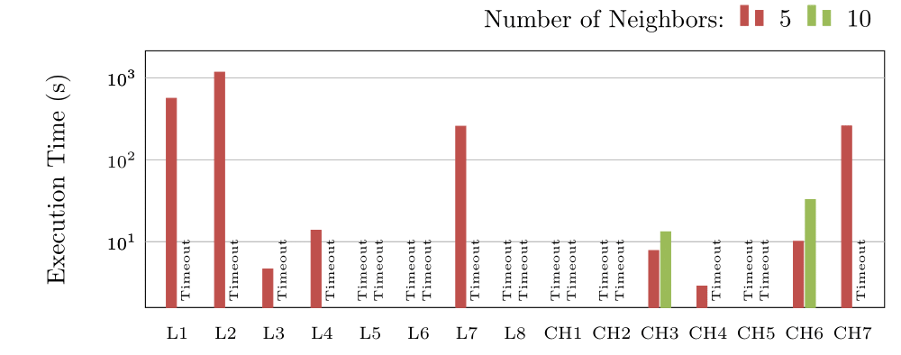
Completeness in Percentage for groups CD and LS
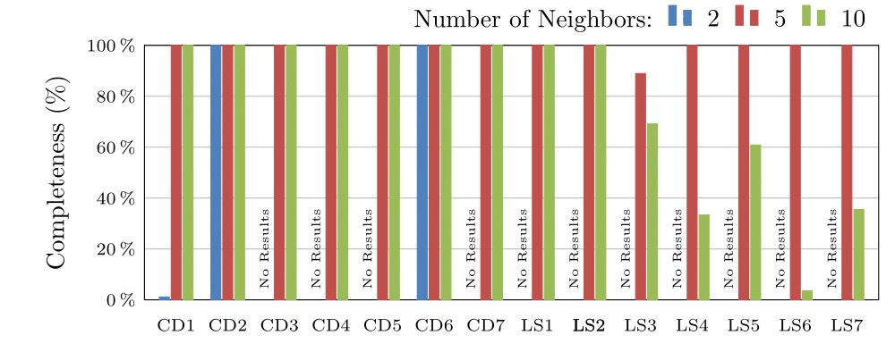
Completeness in Percentage for group C
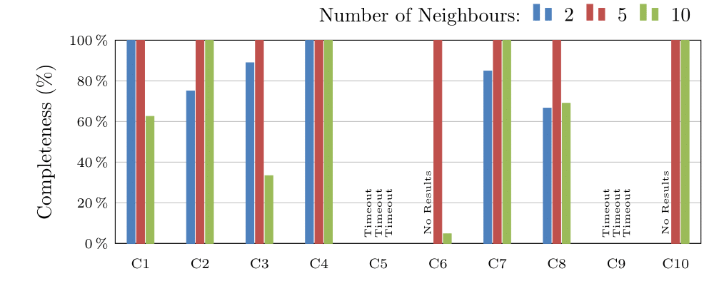
INSTALLATION
PIQNIC is currently implemented only as a prototype for testing the performance and availability of a network. Some features, described in the paper are therefore missing. Here is a list of known differences:
Missing/low-efficient implementation for things not essential for performance, e.g. joining the network and adding new fragments to the network.
The random part of the neighbors are not random, since they are the least related neighbors of other nodes.
No checks for insertion of fragments, and if it is possible. The request is passed on if an exception is thrown.
Request identifiers are used to avoid responding to the same request twice instead of fragment identifier used to not answer the same fragment twice.
The query exection strategies are in the code called flood (single), bind (bulk) and down (full).
In order to select query execution strategy, set the value of the field PROCESSOR in dk.aau.cs.qweb.piqnic.jena.PiqnicJenaConstants to either ProcessingType.FLOOD, ProcessingType.BIND, or
ProcessingType.DOWN.